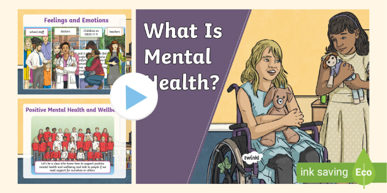
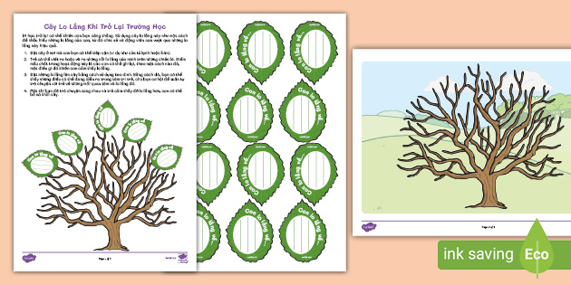

Những khía cạnh của chăm sóc sức khỏe tinh thần
Những năm gần đây, sức khỏe tinh thần của con người dần được chú trọng và chúng ta cũng dành nhiều thời gian hơn để chăm sóc cho bản thân. Vậy sức khỏe tinh thần là gì? Chăm sóc sức khỏe tinh thần cần dựa vào những tiêu chí gì?
Sức khỏe tinh thần là gì?
Theo định nghĩa được tổ chức Y Tế Thế Giới (WHO) công nhận, sức khỏe tinh thần là tổng hợp tất cả những yếu tố về cảm xúc, tâm lý và sự an yên trong tinh thần của chúng ta. Nó chi phối cách chúng ta xử lý căng thẳng, cách chúng ta đưa ra những quyết định có lợi cho bản thân, hoặc cách chúng ta liên kết với người khác. Như vậy, một người có sức khỏe tinh thần tốt là một người có một suy nghĩ liên thông, rành mạch, có thể đưa ra những quyết định trong tình trạng tỉnh táo, thoải mái, tự tin. Họ là những người có sự cân bằng cảm xúc và không bị các vấn đề tâm lý chi phối, giúp họ đối phó với căng thẳng một cách hiệu quả.
Chúng ta thường nhầm lẫn rằng chỉ khi nào mắc những bệnh tâm lý thì sức khỏe tinh thần mới không tốt. Tuy nhiên, theo tổ chức WHO thì việc một cá nhân không thể đảm bảo một trong bốn yếu tố sau cũng có thể được xem là sức khỏe tinh thần chưa tốt:
Họ mù mờ trước khả năng của bản thân
Họ không thể giải quyết căng thẳng một cách hoàn chỉnh
Mức độ năng suất không cao
Ít hoặc không tạo ra giá trị cho cộng đồng nói chung
Như vậy, khi nào chúng ta đảm bảo được 4 yếu tố này trong cuộc sống nói chung, lúc ấy sức khỏe tinh thần mới được đánh giá là tốt. Khi sức khỏe tinh thần ở trạng thái tốt, chúng ta sẽ cảm thấy vui vẻ, phấn chấn và luôn tìm được ý nghĩa trong cuộc sống này. Những cảm xúc tích cực này sẽ tạo ra động lực giúp chúng ta tiến lên và tạo ra những giá trị mới, đồng thời giữ cho tinh thần phấn chấn, an yên.
Tầm quan trọng của chăm sóc sức khỏe tinh thần
Một cá nhân không có sức khỏe tinh thần tốt có thể gặp nhiều vấn đề trong cuộc sống. Nhiều nghiên cứu chỉ ra rằng, sức khỏe tinh thần không tốt có mối liên hệ đến một số khó khăn trong cuộc sống như sự phân biệt, mất việc, mối quan hệ gặp trục trặc, làm cho cá nhân bị mất cân bằng, dẫn đến stress và nhiều bệnh lý khác. Vì vậy, cần liên hệ đến những trung tâm uy tín để có thể tìm đến sự giúp đỡ kịp thời.
Không chỉ ở người trưởng thành, chăm sóc sức khỏe tinh thần còn quan trọng trong tất cả những giai đoạn của con người, từ trẻ em cho đến thanh thiếu niên. Bởi sức khỏe tinh thần đóng một vai trò quan trọng trong việc hình thành kỹ năng của chúng ta. Nó chi phối hành vi, lời nói và cách chúng ta gắn kết với xã hội. Khác với sức khỏe thể chất có thể được chẩn đoán chuẩn xác thông qua các thiết bị tân tiến, sức khỏe tinh thần là tất cả những gì xảy ra trong bộ não của chúng ta, là cách chúng ta nghĩ và cảm nhận mọi thứ xung quanh. Trong một xã hội xuất hiện những quy chuẩn thước đo tương đối, chúng ta thường không để tâm nhiều đến những điều bất ổn xảy ra trong cuộc sống, điều này khiến những trục trặc về tinh thần thường khó bị phát hiện hơn. Một cơ thể không duy trì được sức khỏe tinh thần tốt sẽ dễ phát sinh những bệnh lý nguy hiểm, ảnh hưởng đến trải nghiệm và cảm xúc của chúng ta.
Các khía cạnh của chăm sóc sức khỏe tinh thần
Sức khỏe thể chất
Để chăm sóc sức khỏe tinh thần, chúng ta cần phải ý thức được mối liên hệ trực tiếp giữa sức khỏe thể chất và sức khỏe tinh thần. Một cơ thể khỏe mạnh sẽ giúp chúng ta làm việc hiệu quả, một chế độ ăn lành mạnh sẽ hỗ trợ cho trí lực thêm vững chắc. Mối liên hệ mật thiết này có thể giải thích thông qua cơ chế nghỉ ngơi và phục hồi của cơ thể. Sự điều hòa giữa vận động và nghỉ ngơi sẽ giúp cơ thể cảm thấy dễ chịu, giúp duy trì tình trạng sức khỏe tốt. Bên cạnh đó, hoạt động thể chất cũng giúp cơ thể sinh ra những hormones hưng phấn, giúp đẩy lùi những suy nghĩ tiêu cực.
Các mối quan hệ xung quanh
Con người là loài động vật sống bầy đàn. Dù đã trải qua hàng trăm nghìn năm tiến hóa, với tập tính đoàn kết và thường hướng về cộng đồng, cảm giác bị cô lập khỏi “bầy” của mình chính là cảm giác nguy hiểm nhất mà tiềm thức chúng ta vẫn liên tục cảnh báo. Vì vậy, chăm sóc sức khỏe tinh thần tốt nghĩa là duy trì những mối quan hệ chất lượng với “bầy” của mình, ở đây có thể là bạn bè, đồng nghiệp, cha mẹ hoặc bạn phối ngẫu. Các mối quan hệ chất lượng mà chúng ta đầu tư vào sẽ đem lại lợi ích cho cả đôi bên, không chỉ tạo ra những ký ức đáng quý giúp chống lại sự cô đơn, giúp chúng ta cảm thấy thuộc về, các mối quan hệ cũng sẽ tạo ra sự bình yên, giúp chúng ta giải tỏa những cảm xúc tiêu cực và tìm thấy sự cân bằng bên trong mình.
Thế mạnh của mỗi người là khác nhau
Nếp tư duy cào bằng, đánh giá cao sự đồng đều và tẩy chay những gì khác biệt đã trở thành quy chuẩn để đánh giá học sinh. Tuy nhiên, cách đánh giá này không chỉ phiến diện, loại bỏ những sự khác biệt đồng nghĩa với việc từ bỏ những tiềm năng vô hạn mà khác biệt mang lại. Chúng ta thường so sánh bản thân mình với người khác và tự cho rằng mình yếu kém, trong khi thực ra chúng ta không hề giống nhau, và những mối lo âu ấy thực chất có hại nhiều hơn lợi. Cứ 10 người thì 6 đến 7 người đã mang tâm lý áp lực đồng trang lứa, và điều này vô cùng nguy hiểm cho tương lai của nhân loại.
Ý thức được điểm mạnh và điểm yếu của mình cũng là một khía cạnh trong việc chăm sóc sức khỏe tinh thần của mình. Trong bốn yếu tố đánh giá của WHO, thì việc nhận ra khả năng của mình là một dấu hiệu của một tinh thần khỏe mạnh: chúng ta không lo lắng khi phải liên tục so sánh bản thân với những người khác, chúng ta hiểu rằng bản thân có thể làm được những điều mà người khác không làm được. Nếp tư duy này sẽ đẩy lùi sự căng thẳng do lo âu quá mức, đồng thời đem lại niềm vui khi chúng ta đã sống và cống hiến cho xã hội, như một thành viên của xã hội.
Ý thức được cảm xúc của bản thân
Để tránh việc mắc phải sự tích cực độc hại, chăm sóc sức khỏe tinh thần còn thể hiện ở việc chúng ta thẳng thắn thừa nhận những cảm xúc tiêu cực của bản thân. Buồn, vui, giận dữ, sợ hãi hay khó chịu đều là những cảm xúc rất cần thiết để cơ thể đối phó với những khó khăn bên ngoài.
Vì vậy, thẳng thắn thừa nhận mình đang gặp khó khăn trong việc điều tiết cảm xúc của bản thân sẽ giúp cơ thể chú ý đến vấn đề, từ đó chúng ta có thể đưa ra phương án giải quyết hợp lý, một trong số đó là đi tìm sự trợ giúp từ chuyên gia.